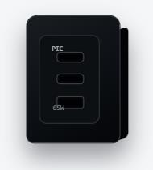
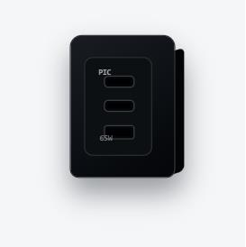

CREATE FROM EVIDENCE
先确认产品真实外观，再用模板、商品资料与设计要求组装本次生成简报。
PRODUCT EVIDENCE


GENERATION BRIEF
RAG REFERENCES
USB-C ×2、USB-A ×1；单口最高输出 65W。
适用于笔记本、平板和手机同时补能的桌面场景。
小体积设计，适合办公与旅行携带。
RECENT PROJECTS
继续处理最近创建的套图任务。
4 张图片 · 更新于 12 分钟前
模板和资料已选择 · 昨天
从商品实拍图开始新的设计任务。